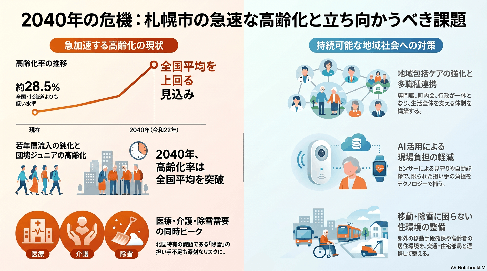

人口減少・高齢化
10年以内
高齢化の進行
現状の高齢化率は全国より低いが、2040年に向け急速に高まる。

背景
札幌は若年層の流入で支えられてきたため、現在の高齢化率は全国より低い。しかし流入が細り団塊ジュニアが高齢期に入ると、医療・介護・除雪などの需要が同時に急増する。
主要データ
| 高齢化率（現状） | 約28.5% |
|---|---|
| 全国を上回る見込み | 2040年（令和22年） |
事実
- 札幌市の高齢化率は約28.5%で、北海道や全国と比べると低い水準にある。
- 団塊ジュニア世代がすべて65歳以上となる2040年（令和22年）には、高齢化率が全国を上回ると見込まれている。
解釈
今は相対的に若い都市だが、若年層の流入で支えられてきた構造ゆえに、流入が細ると高齢化は一気に進む。医療・介護・除雪などの需要が同時に増す。
提案
- 介護・医療の担い手確保と地域包括ケアの強化。
- 高齢者が移動・除雪に困らない住環境の整備。
検討体制・メンバー
札幌市保健福祉局が高齢者支援計画を担う。検討会には医療・介護の専門職、地域包括支援センター、町内会・民生委員、住宅・交通の部局、当事者である高齢者・家族の代表を入れ、生活全体を支える視点でまとめるとよい。
AIノート
AIの貢献度は中〜大。見守りセンサーやチャットによる相談、ケアプラン作成支援、介護記録の自動化で担い手の負担を軽減できる。需要予測で医療・介護資源の配置も改善できるが、ケアの中心は人の手であり、AIは支援役となる。